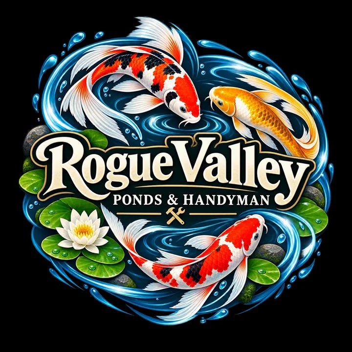
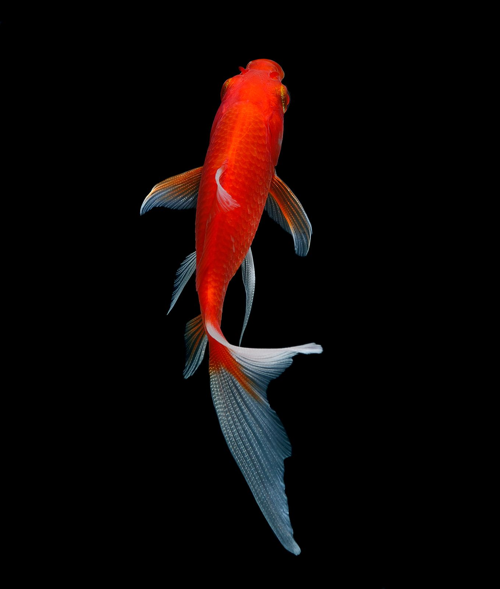
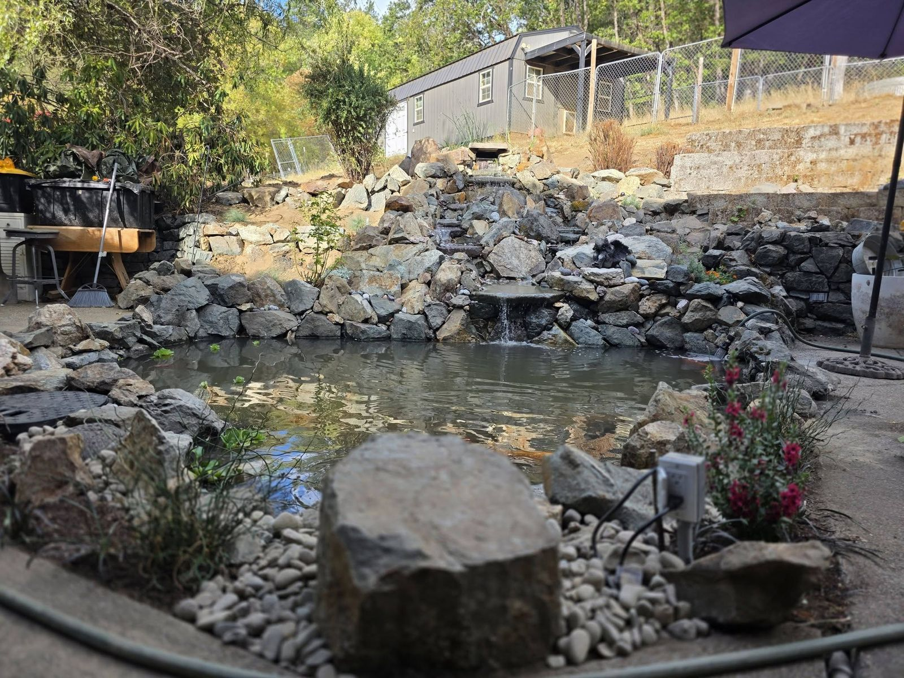
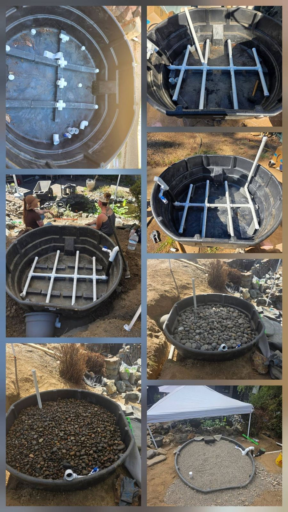
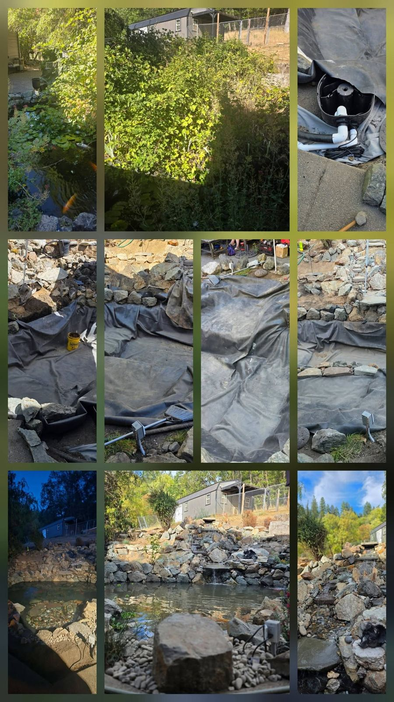
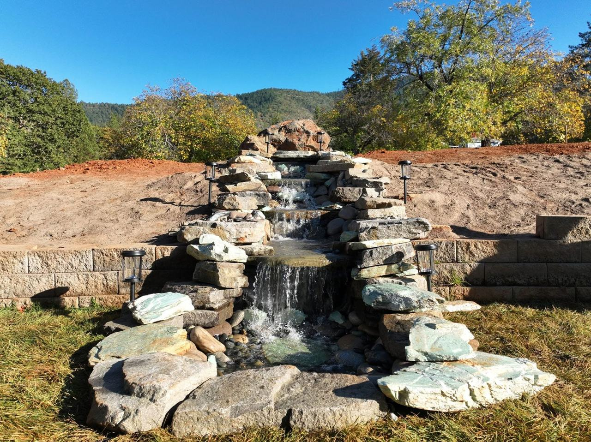
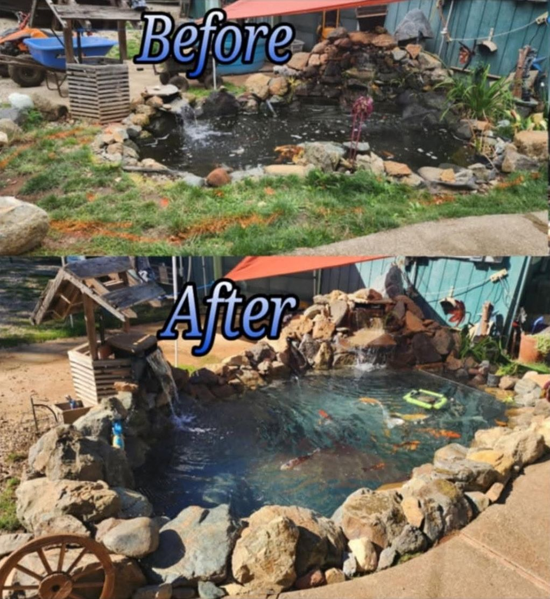
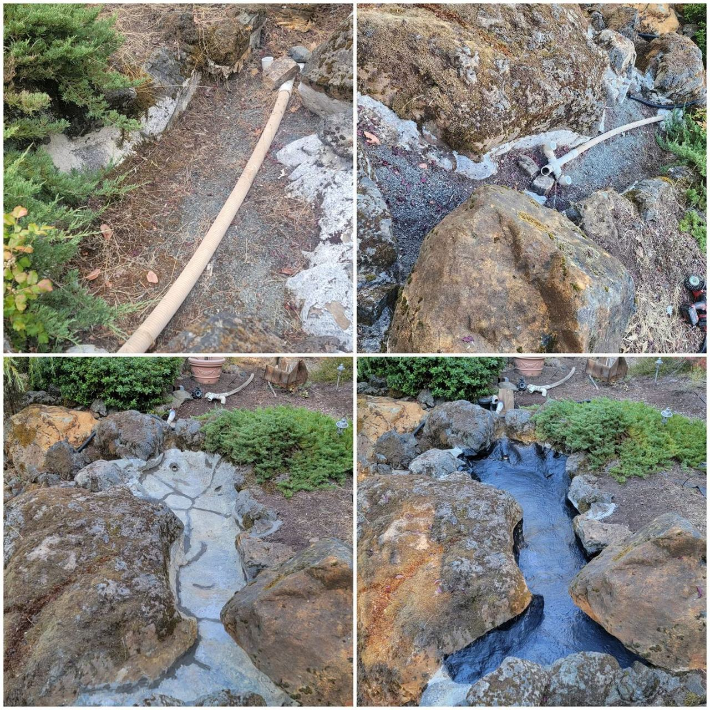
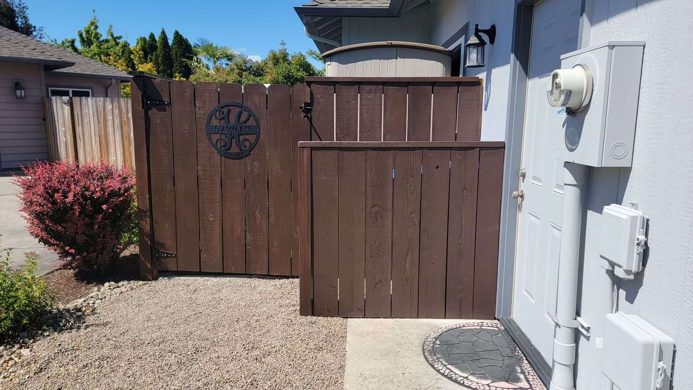
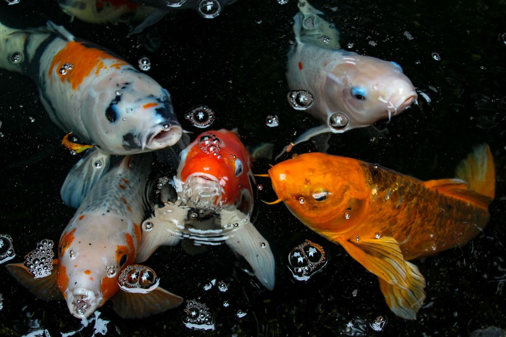

Ponds, water features and koi. Repairs done right.
Robert builds and looks after backyard ponds, water features and koi, and takes care of the repairs around the house that keep getting put off. Tell him about the job and he’ll call you back with a quote.
This monthLeaf netting and skimmer cleanouts

From a dug hole to clear water and healthy fish
The specialty since 2021: new builds, rescues of ponds that have gone green, koi care, and the yearly upkeep that keeps fish healthy and pumps running.

Pond builds and remodels
Excavation, liner or preformed shell, rock work, plants and fish-safe startup.
Ask about a build →Waterfalls, streams and fountains
Recirculating features sized to the pump, so the water moves without overflowing.
Ask about a feature →Koi ponds and fish care
Koi-depth builds and filtration, water testing, quarantine for new fish, and moving fish safely during work.
Ask about koi →Cleanouts
Drain, remove sludge and leaves, rinse rock, refill with dechlorinated water. Fish held safely.
Book a cleanout →Pumps, filters and UV
Diagnose, repair or replace. Sized by gallons and head height, not guesswork.
Get it running →Leak finding and liner repair
Track down where the water goes, patch or reline.
Find the leak →Seasonal open and close
Spring startup, fall netting, and keeping an opening in the ice on cold snaps.
Plan the season →Not sure what it needs?
Describe what you’re seeing and send a photo. Robert will tell you where to start.
Describe the problem →Ponds and jobs around the valley
A few from this year. More, with the step-by-step, on Facebook.







Fences and gates
Replace boards and posts, rehang sagging gates, new latches.
Decks, steps and railings
Replace rotted boards, tighten railings, clean and seal.
Drywall and paint
Patch holes and cracks, texture to match, touch-up or full rooms.
Doors, windows and trim
Sticking doors, new hardware, caulk and weatherstrip.
Fixtures and assembly
Swap faucets and light fixtures, mount TVs and shelves, put together flat-packs.
Yard and outdoor repairs
Raised beds, drip lines, gutters, and whatever the last storm knocked loose.
The list on the fridge
Small and medium jobs, done once and cleaned up after. If it needs a licensed trade, Robert will say so.
What your pond needs, month by month
Hot, dry summers and wet winters with the odd hard freeze. Here’s when each job matters.
Spring startup
Cleanout, restart pumps and filters, check the liner after winter, start feeding fish again once the water passes 50°F.
Planting
Add plants for shade and filtration, set up the UV, and balance the water before the heat arrives.
Summer heat
Top off for evaporation, keep algae down, and add aeration: warm water holds less oxygen for fish.
Leaf season
Net the pond before the oaks and maples drop, empty skimmers often, and cut back plants.
Winter
Shut down or run a small pump, keep a hole open in the ice on freezing nights, and plan repairs and new builds.
From first message to finished job
Tell Robert about the job
Use the quote form, or call or text. Photos help: text them to 541-761-6681.
He calls you back
To ask the questions that matter: size, access, what’s been tried.
Visit and written quote
For anything bigger than a quick fix, he looks first and puts the price in writing.
The work, then the cleanup
Done on the agreed day, and the yard left the way it was found.
Josephine and Jackson counties
Based in Grants Pass. Outside these towns? Ask anyway.
- Grants Pass
- Merlin
- Murphy
- Wilderville
- Williams
- Cave Junction
- Rogue River
- Gold Hill
- Central Point
- Medford
Tell Robert about the job
He reads every request himself and calls back to talk it through. Prefer to talk now? Call or text 541-761-6681.
